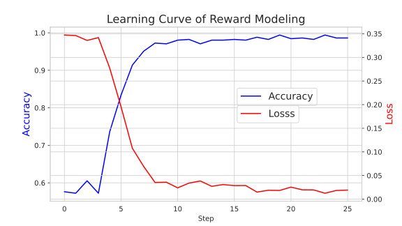

Quickstart¶
Installation¶
First, clone the ReaL repository from GitHub:
$ git clone https://github.com/openpsi-project/ReaLHF
$ cd ReaLHF
RLHF with 4x LLaMA-7B in 30min¶
If you are not familiar with the procedure of RLHF, please refer to the InstrctGPT paper. This tutorial will cover the main stages of RLHF, including SFT, reward modeling, and PPO.
Note
If you have not prepared a dataset for your application, you can download our sample dataset to follow this tutorial. The sample dataset is used for controlled sentiment generation, where the LLM learns to generate positive movie comments given a context.
Stage 1: Supervised Fine-Tuning¶
Prepare your customized dataset in a JSON or JSONL format, where each entry is a dictionary with two keys: “prompt” and “answer”. For example:
{"prompt": "What is the capital of France?", "answer": "The capital of France is ..."}
{"prompt": "Please make a travel plan for visiting Berlin?", "answer": "..."}
Note
In our provided sample,
sft_pos-train.jsonl and sft_pos-valid.jsonl are the training and validation sets for SFT, respectively.
Run the following command to fine-tune the model on your dataset:
$ python3 -m realhf.apps.quickstart sft \
experiment_name=quickstart-sft \
trial_name=release \
allocation_mode=manual \
mode=local \
n_nodes=1 \
total_train_epochs=8 \
save_freq_steps=50 \
eval_freq_epochs=1 \
model.type._class=llama \
model.type.size=7 \
model.type.is_critic=False \
model.path=/path/or/HF-identifier/of/llama-7b \
model.gradient_checkpointing=True \
model.optimizer.type=adam \
dataset.train_path=/path/to/train/dataset.jsonl \
dataset.valid_path=/path/to/valid/dataset.jsonl \
dataset.max_seqlen=1024 \
allocation.parallel.pipeline_parallel_size=1 \
allocation.parallel.model_parallel_size=2 \
allocation.parallel.data_parallel_size=4 \
allocation.parallel.use_sequence_parallel=True \
dataset.train_bs_n_seqs=512 \
dataset.valid_bs_n_seqs=512
Note
ReaL adopts structured configurations
in Hydra to manage command line options.
The options in the above command correspond to a Python
dataclass object: realhf.SFTConfig.
The attributes, including the model type, learning rate, and parallel strategy,
can be recursively overwritten via command line options.
Please check Configurations for more details.
Note
As a reminder, the value null should represent None in Python.
The user can specify the number of nodes and the parallel strategy to use with the above command, in addition to paths and hyperparameters. In the given example, the experiment will use 1 node (assuming each node has 8 GPUs), with a parallel strategy (pipe=1, tensor=2, data=4) and a batch size of 512.
After the experiment has been successfully launched, you will see the training logs in the console like this:
20240618-03:10:56.216 quickstart INFO: Running sft experiment.
20240618-03:10:56.216 quickstart INFO: Logs will be dumped to /lustre/aigc/llm/logs/fw/quickstart-sft/release
20240618-03:10:56.216 quickstart INFO: Model checkpoints will be saved to /lustre/aigc/llm/checkpoints/fw/quickstart-sft/release
...
The above output shows the log and checkpoint paths of this experiment,
according to the given experiment_name and trial_name.
Note
ReaL directly loads from HuggingFace models and also saves checkpoints as HuggingFace models, making it convenient to use pre-trained checkpoints and to deploy trained models with inference frameworks like vLLM.

0: 20240618-13:32:19.081 master worker INFO: Execution finished!
0: 20240618-13:32:19.083 master worker INFO: Epoch 8/8 step 7/7 ... Total time consumption: 628.051s. ...
...
0: 20240618-13:32:34.906 master worker INFO: Execution finished!
0: 20240618-13:32:34.906 master worker INFO: Training complete! Yeah!!!
The SFT experiment will take about 10 minutes to finish using our provided dataset and configuration. Let’s move on to the next stage.
Stage 2.1: Reward Modeling (RM)¶
Prepare your customized dataset in a JSON or JSONL format, where each entry is a dictionary with three keys: “prompt”, “pos_answer”, and “neg_answers”.
“prompt” should be a string, while “pos_answer” and “neg_answers” should be lists of strings of the same size, forming pairwise comparisons.
Note
In our provided sample,
rm_paired-train.jsonl and rm_paired-valid.jsonl are the
training and validation sets for reward modeling, respectively.
Run the following command to train the reward model:
$ python3 -m realhf.apps.quickstart rw \
experiment_name=quickstart-rw \
trial_name=release \
mode=local \
allocation_mode=manual \
total_train_epochs=1 \
save_freq_steps=5 \
eval_freq_epochs=1 \
model.type._class=llama \
model.type.size=7 \
model.type.is_critic=True \
model.path=/saved/sft/model/path \
allocation.parallel.pipeline_parallel_size=2 \
allocation.parallel.model_parallel_size=2 \
allocation.parallel.data_parallel_size=2 \
allocation.parallel.use_sequence_parallel=True \
model.gradient_checkpointing=True \
dataset.train_path=/path/to/train/dataset.jsonl \
dataset.valid_path=/path/to/valid/dataset.jsonl \
dataset.max_pairs_per_prompt=2 \
dataset.max_seqlen=1024 \
dataset.train_bs_n_seqs=512 \
dataset.valid_bs_n_seqs=512
It’s common practice to use the SFT model to initialize the reward model.
Therefore, we can pass the path of the saved SFT model as the model.path option.
Using the pre-trained LLaMA checkpoint is also feasible, but it may not perform as well.
In reward modeling, the batch size is the number of paired comparisons. With a batch size of 512, there will be 512 positive samples and 512 negative samples in each batch.
Training the reward model to convergence can be very fast. In the given example, we can stop the training after 15 steps, which takes approximately 5 minutes.
0: 20240618-13:53:00.094 master worker INFO: Epoch 1/1 step 15/26 (global step 15) finishes. ... Total time consumption: 294.393s.
Stage 2.2: Direct Preference Optimization (DPO)¶
Besides the ordinary RLHF procedure with PPO, ReaL also supports the DPO algorithm, which avoids reward modeling.
The dataset for DPO is exactly the same as for reward modeling.
Run the following command to train using DPO:
$ python3 -m realhf.apps.quickstart dpo \
experiment_name=quickstart-dpo \
trial_name=release \
allocation_mode=manual \
mode=local \
total_train_epochs=2 \
save_freq_steps=5 \
actor.type._class=llama \
actor.type.size=7 \
actor.type.is_critic=False \
actor.path=/saved/sft/model/path \
actor_train.parallel.pipeline_parallel_size=1 \
actor_train.parallel.model_parallel_size=4 \
actor_train.parallel.data_parallel_size=2 \
actor_train.parallel.use_sequence_parallel=True \
ref.type._class=llama \
ref.type.size=7 \
ref.type.is_critic=False \
ref.path=/saved/sft/model/path \
ref_inf.parallel.pipeline_parallel_size=1 \
ref_inf.parallel.model_parallel_size=2 \
ref_inf.parallel.data_parallel_size=4 \
ref_inf.parallel.use_sequence_parallel=True \
dataset.train_path=/path/to/train/dataset.jsonl \
dataset.max_pairs_per_prompt=2 \
dataset.max_seqlen=1024 \
dataset.train_bs_n_seqs=512 \
dataset.valid_bs_n_seqs=512
Note that there’s a major difference between DPO and SFT/RM. DPO involves two different models, the actor and the reference. The former is the primary LLM to be trained and the latter is the frozen SFT model to provide KL regularizations.
A training iteration of DPO is composed of two steps:
RefInf: The reference model performs a forward step to compute the log probabilities of positive and negative answers.
ActorTrain: Given the reference log probabilities, the actor model computes the DPO loss, runs the backward pass, and updates the parameters.
In ReaL, these two steps can run with different parallel strategies, maximizing the efficiency of the individual workloads.
These parallel strategies can be specified in the ref_inf and actor_train fields.
Specifically, pipelined inference can be faster than tensor-paralleled inference due to
the reduced communication overhead, so assigning a relatively large pipeline_parallel_size
for ref_inf can be favorable.
Moreover, ReaL can automatically offload the parameters of the reference model once RefInf is done. This offloading fully supports 3D parallelism and does not require DeepSpeed ZeRO-3 or any additional configurations. Consequently, ReaL’s DPO is as memory-efficient as training a single model like SFT!
Stage 3: PPO¶
After the SFT and RM stages, we can proceed to the PPO stage. The dataset for PPO should be a JSON or JSONL file with each entry being a dictionary with a single key “prompt”.
Note
In our provided sample,
ppo_prompt.jsonl is the training set for PPO.
Run the following command to train using PPO:
$ python3 -m realhf.apps.quickstart ppo \
experiment_name=quickstart-ppo \
trial_name=release \
total_train_epochs=1 \
allocation_mode=heuristic \
save_freq_steps=null \
actor.type._class=llama \
actor.type.size=7 \
actor.type.is_critic=False \
actor.path=/saved/sft/model/path \
actor.gradient_checkpointing=True \
critic.type._class=llama \
critic.type.size=7 \
critic.type.is_critic=True \
critic.path=/saved/rw/model/path \
critic.gradient_checkpointing=True \
ref.type._class=llama \
ref.type.size=7 \
ref.type.is_critic=False \
ref.path=/saved/sft/model/path \
rew.type._class=llama \
rew.type.size=7 \
rew.type.is_critic=True \
rew.path=/saved/rw/model/path \
dataset.path=/path/to/prompt/dataset.jsonl \
dataset.max_prompt_len=256 \
dataset.train_bs_n_seqs=128 \
ppo.max_new_tokens=256 \
ppo.min_new_tokens=256 \
ppo.ppo_n_minibatches=4 \
ppo.kl_ctl=0.1 \
ppo.force_no_logits_mask=False \
ppo.value_eps_clip=0.2 \
ppo.reward_output_scaling=10.0 \
ppo.adv_norm=True ppo.value_norm=True \
ppo.top_p=0.9 ppo.top_k=1000
Note
You can also pass in the trained DPO checkpoint to initialize the PPO policy.
The configuration options of PPO are the most complex among the three stages. PPO involves four different models: Actor, Critic, Reference, and Reward. Each model can have different functionalities across a training iteration. For example, the Actor should first generate responses given prompts and then be trained given rewards, values, and KL regularizations.
Training iterations of PPO can be illustrated as follows:

We can see that there are six distinct function calls on these four models. In ReaL, these function calls can have independent allocations and parallel strategies. Each GPU can accommodate parameter shards of multiple models (e.g., both the Actor and the Reward). Between two function calls upon the same model, ReaL will automatically re-allocate model parameters between source and destination locations and properly remap parallel strategies. .. The reallocation also includes GPU-to-CPU reallocation, referred to as offloading. This technique can substantially reduce communication overhead caused by parallelization and improve GPU utilization. Please check Introduction for more details.
In the above command, fields actor, critic, ref, and rew
specify the configurations of the four models.
The allocations and parallel strategies for function calls are automatically
handled by the heuristic allocation mode.
This is a near-optimal execution strategy found by the search engine in ReaL.
For the details of PPO hyperparameters in the ppo field, please check
realhf.PPOHyperparameters for a detailed explanation.

0: 20240618-14:46:38.007 master worker INFO: Epoch 1/1 step 39/39 (global step 39) finishes. ... Total time consumption: 574.312s. ...
...
0: 20240618-14:46:54.387 master worker INFO: Execution finished!
0: 20240618-14:46:54.387 master worker INFO: Training complete! Yeah!!!
We train PPO on 5000 prompts over 1 epoch, which consumes about 10 minutes. Summing up the time of the three stages, we can finish the RLHF process within half an hour! This efficiency can largely help algorithm developers to search for the best hyperparameters and iterate on the algorithm design.